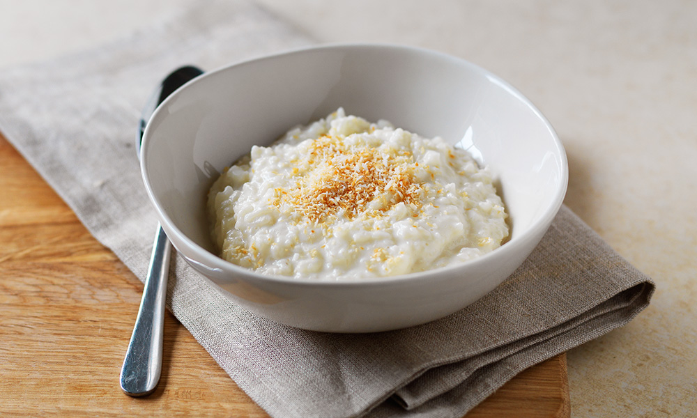

Rice Pudding

Description
A recipe to make old-fashioned rice pudding, with cooked rice, egg, butter and vanilla. Yum yum.
Ingredients
- 1½ cups cooked rice
- 2 cups milk, divided
- ¼ teaspoon salt
- 1 egg, beaten
- ⅓ cup white sugar
- 1 tbsp butter
- ½ teaspoon vanilla extract
Steps
- Combine cooked rice, 1 1/2 cups milk, and salt in a saucepan over medium heat; cook and stir until thick and creamy, 15 to 20 minutes.
- Stir remaining 1/2 cup milk, golden raisins, beaten egg, and white sugar into the rice mixture; stirring continually. Continue cooking until egg is set, 2 to 3 minutes.
- Remove saucepan from heat; stir butter and vanilla extract into the pudding.